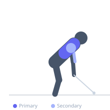

Exercise guide / Single-Arm Cable Row
Single-Arm Cable Row
The single-arm cable row is a unilateral horizontal pulling exercise that allows greater range of motion and scapular movement than bilateral rowing variations. Training each side independently corrects strength imbalances and allows the torso to rotate slightly, increasing latissimus dorsi and rhomboid engagement through a fuller range.
Primary muscles
latissimus dorsi
rhomboid major
Secondary muscles
trapezius middle
deltoid posterior
biceps brachii long head
Stabilizers
transverse abdominis
internal oblique
Equipment
Cable Machine (Low Pulley)
Optional
Cable Machine (Dual Pulley / Functional Trainer)


Starting position
- Stand or sit facing a low-pulley cable machine. Grasp a single handle with one hand. Take a step back (or sit on a bench) and extend the working arm fully forward, feeling the lat on stretch.
Setup
- Attach a single-grip D-handle to the low pulley. Stand facing the cable or sit on a bench positioned in front of the cable stack. Set a weight appropriate for single-arm pulling.
Steps
- Step 1: Begin with the arm fully extended toward the cable, allowing the shoulder to protract and the lat to stretch.
- Step 2: Drive the elbow backward, retracting the scapula, and row the handle toward the lower ribcage.
- Step 3: At the end of the row, squeeze the lat and rhomboids hard with the elbow behind the torso.
- Step 4: Allow slight torso rotation toward the working side to increase the stretch — control this rotation; do not let it become momentum.
- Step 5: Slowly extend the arm back to the starting position, fully protracting the scapula.
Coaching cues
- Think 'elbow to back pocket'
- Let your shoulder blade glide forward at the start to get the full stretch
- Row to your hip, not your chest
Breathing
- Exhale as you row the handle in. Inhale as you return to the starting position.
Range of motion
- Full extension of the arm at the start to full retraction of the scapula at the end. Allow the shoulder to move freely.
Tempo
- 2-1-2-0 (2s pull, 1s hold, 2s eccentric)
Common mistakes
- Rotating the torso excessively and using it to swing the weight
- Not allowing full scapular protraction at the start, limiting range of motion
- Pulling with the biceps by keeping the elbow close to the body from the start rather than driving it back
Safety
- Keep the core braced to avoid excessive spinal rotation under load
- Do not jerk the weight — control both the concentric and eccentric phases
Training
- strength: 6–10 reps
- hypertrophy: 10–15 reps
- strength: 3–5 sets
- hypertrophy: 3–4 sets
- Rest: {'strength': 120, 'hypertrophy': 75}